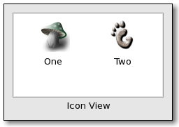

| GTK+ Reference Manual |
|---|
GtkIconViewGtkIconView — A widget which displays a list of icons in a grid |  |
#include <gtk/gtk.h>
GtkIconView;
GtkIconViewPrivate;
void (*GtkIconViewForeachFunc) (GtkIconView *icon_view,
GtkTreePath *path,
gpointer data);
GtkWidget* gtk_icon_view_new (void);
GtkWidget* gtk_icon_view_new_with_model (GtkTreeModel *model);
void gtk_icon_view_set_model (GtkIconView *icon_view,
GtkTreeModel *model);
GtkTreeModel* gtk_icon_view_get_model (GtkIconView *icon_view);
void gtk_icon_view_set_text_column (GtkIconView *icon_view,
gint column);
gint gtk_icon_view_get_text_column (GtkIconView *icon_view);
void gtk_icon_view_set_markup_column (GtkIconView *icon_view,
gint column);
gint gtk_icon_view_get_markup_column (GtkIconView *icon_view);
void gtk_icon_view_set_pixbuf_column (GtkIconView *icon_view,
gint column);
gint gtk_icon_view_get_pixbuf_column (GtkIconView *icon_view);
GtkTreePath* gtk_icon_view_get_path_at_pos (GtkIconView *icon_view,
gint x,
gint y);
void gtk_icon_view_selected_foreach (GtkIconView *icon_view,
GtkIconViewForeachFunc func,
gpointer data);
void gtk_icon_view_set_selection_mode
(GtkIconView *icon_view,
GtkSelectionMode mode);
GtkSelectionMode gtk_icon_view_get_selection_mode
(GtkIconView *icon_view);
void gtk_icon_view_set_orientation (GtkIconView *icon_view,
GtkOrientation orientation);
GtkOrientation gtk_icon_view_get_orientation
(GtkIconView *icon_view);
void gtk_icon_view_set_columns (GtkIconView *icon_view,
gint columns);
gint gtk_icon_view_get_columns (GtkIconView *icon_view);
void gtk_icon_view_set_item_width (GtkIconView *icon_view,
gint item_width);
gint gtk_icon_view_get_item_width (GtkIconView *icon_view);
void gtk_icon_view_set_spacing (GtkIconView *icon_view,
gint spacing);
gint gtk_icon_view_get_spacing (GtkIconView *icon_view);
void gtk_icon_view_set_row_spacing (GtkIconView *icon_view,
gint row_spacing);
gint gtk_icon_view_get_row_spacing (GtkIconView *icon_view);
void gtk_icon_view_set_column_spacing
(GtkIconView *icon_view,
gint column_spacing);
gint gtk_icon_view_get_column_spacing
(GtkIconView *icon_view);
void gtk_icon_view_set_margin (GtkIconView *icon_view,
gint margin);
gint gtk_icon_view_get_margin (GtkIconView *icon_view);
void gtk_icon_view_select_path (GtkIconView *icon_view,
GtkTreePath *path);
void gtk_icon_view_unselect_path (GtkIconView *icon_view,
GtkTreePath *path);
gboolean gtk_icon_view_path_is_selected (GtkIconView *icon_view,
GtkTreePath *path);
GList* gtk_icon_view_get_selected_items
(GtkIconView *icon_view);
void gtk_icon_view_select_all (GtkIconView *icon_view);
void gtk_icon_view_unselect_all (GtkIconView *icon_view);
void gtk_icon_view_item_activated (GtkIconView *icon_view,
GtkTreePath *path);
"column-spacing" gint : Read / Write "columns" gint : Read / Write "item-width" gint : Read / Write "margin" gint : Read / Write "markup-column" gint : Read / Write "model" GtkTreeModel : Read / Write "orientation" GtkOrientation : Read / Write "pixbuf-column" gint : Read / Write "row-spacing" gint : Read / Write "selection-mode" GtkSelectionMode : Read / Write "spacing" gint : Read / Write "text-column" gint : Read / Write
"activate-cursor-item" gboolean user_function (GtkIconView *iconview, gpointer user_data); "item-activated" void user_function (GtkIconView *iconview, GtkTreePath *arg1, gpointer user_data); "move-cursor" gboolean user_function (GtkIconView *iconview, GtkMovementStep arg1, gint arg2, gpointer user_data); "select-all" void user_function (GtkIconView *iconview, gpointer user_data); "select-cursor-item" void user_function (GtkIconView *iconview, gpointer user_data); "selection-changed" void user_function (GtkIconView *iconview, gpointer user_data); "set-scroll-adjustments" void user_function (GtkIconView *iconview, GtkAdjustment *arg1, GtkAdjustment *arg2, gpointer user_data); "toggle-cursor-item" void user_function (GtkIconView *iconview, gpointer user_data); "unselect-all" void user_function (GtkIconView *iconview, gpointer user_data);
GtkIconView provides an alternative view on a list model. It displays the model as a grid of icons with labels. Like GtkTreeView, it allows to select one or multiple items (depending on the selection mode, see gtk_icon_view_set_selection_mode()). In addition to selection with the arrow keys, GtkIconView supports rubberband selection, which is controlled by dragging the pointer.
typedef struct _GtkIconView GtkIconView;
The GtkIconView struct contains only private fields and should not be directly accessed.
void (*GtkIconViewForeachFunc) (GtkIconView *icon_view, GtkTreePath *path, gpointer data);
A function used by gtk_icon_view_selected_foreach() to map all selected rows. It will be called on every selected row in the view.
| icon_view : | |
| path : | The GtkTreePath of a selected row |
| data : | user data |
GtkWidget* gtk_icon_view_new (void);
Creates a new GtkIconView widget
| Returns : | A newly created GtkIconView widget |
Since 2.6
GtkWidget* gtk_icon_view_new_with_model (GtkTreeModel *model);
Creates a new GtkIconView widget with the model model.
| model : | The model. |
| Returns : | A newly created GtkIconView widget. |
Since 2.6
void gtk_icon_view_set_model (GtkIconView *icon_view, GtkTreeModel *model);
Sets the model for a GtkIconView. If the icon_view already has a model set, it will remove it before setting the new model. If model is NULL, then it will unset the old model.
| icon_view : | A GtkIconView. |
| model : | The model. |
Since 2.6
GtkTreeModel* gtk_icon_view_get_model (GtkIconView *icon_view);
Returns the model the GtkIconView is based on. Returns NULL if the model is unset.
| icon_view : | a GtkIconView |
| Returns : | A GtkTreeModel, or NULL if none is currently being used. |
Since 2.6
void gtk_icon_view_set_text_column (GtkIconView *icon_view, gint column);
Sets the column with text for icon_view to be column. The text column must be of type G_TYPE_STRING.
| icon_view : | A GtkIconView. |
| column : | A column in the currently used model. |
Since 2.6
gint gtk_icon_view_get_text_column (GtkIconView *icon_view);
Returns the column with text for icon_view.
| icon_view : | A GtkIconView. |
| Returns : | the text column, or -1 if it's unset. |
Since 2.6
void gtk_icon_view_set_markup_column (GtkIconView *icon_view, gint column);
Sets the column with markup information for icon_view to be column. The markup column must be of type G_TYPE_STRING. If the markup column is set to something, it overrides the text column set by gtk_icon_view_set_text_column().
| icon_view : | A GtkIconView. |
| column : | A column in the currently used model. |
Since 2.6
gint gtk_icon_view_get_markup_column (GtkIconView *icon_view);
Returns the column with markup text for icon_view.
| icon_view : | A GtkIconView. |
| Returns : | the markup column, or -1 if it's unset. |
Since 2.6
void gtk_icon_view_set_pixbuf_column (GtkIconView *icon_view, gint column);
Sets the column with pixbufs for icon_view to be column. The pixbuf column must be of type GDK_TYPE_PIXBUF
| icon_view : | A GtkIconView. |
| column : | A column in the currently used model. |
Since 2.6
gint gtk_icon_view_get_pixbuf_column (GtkIconView *icon_view);
Returns the column with pixbufs for icon_view.
| icon_view : | A GtkIconView. |
| Returns : | the pixbuf column, or -1 if it's unset. |
Since 2.6
GtkTreePath* gtk_icon_view_get_path_at_pos (GtkIconView *icon_view, gint x, gint y);
Finds the path at the point (x, y), relative to widget coordinates.
| icon_view : | A GtkIconView. |
| x : | The x position to be identified |
| y : | The y position to be identified |
| Returns : | The GtkTreePath corresponding to the icon or NULL if no icon exists at that position. |
Since 2.6
void gtk_icon_view_selected_foreach (GtkIconView *icon_view, GtkIconViewForeachFunc func, gpointer data);
Calls a function for each selected icon. Note that the model or selection cannot be modified from within this function.
| icon_view : | A GtkIconView. |
| func : | The funcion to call for each selected icon. |
| data : | User data to pass to the function. |
Since 2.6
void gtk_icon_view_set_selection_mode
(GtkIconView *icon_view,
GtkSelectionMode mode);Sets the selection mode of the icon_view.
| icon_view : | A GtkIconView. |
| mode : | The selection mode |
Since 2.6
GtkSelectionMode gtk_icon_view_get_selection_mode (GtkIconView *icon_view);
Gets the selection mode of the icon_view.
| icon_view : | A GtkIconView. |
| Returns : | the current selection mode |
Since 2.6
void gtk_icon_view_set_orientation (GtkIconView *icon_view, GtkOrientation orientation);
Sets the ::orientation property which determines whether the labels are drawn beside the icons instead of below.
| icon_view : | a GtkIconView |
| orientation : | the relative position of texts and icons |
Since 2.6
GtkOrientation gtk_icon_view_get_orientation (GtkIconView *icon_view);
Returns the value of the ::orientation property which determines whether the labels are drawn beside the icons instead of below.
| icon_view : | a GtkIconView |
| Returns : | the relative position of texts and icons |
Since 2.6
void gtk_icon_view_set_columns (GtkIconView *icon_view, gint columns);
| icon_view : | |
| columns : |
gint gtk_icon_view_get_columns (GtkIconView *icon_view);
| icon_view : | |
| Returns : |
void gtk_icon_view_set_item_width (GtkIconView *icon_view, gint item_width);
| icon_view : | |
| item_width : |
gint gtk_icon_view_get_item_width (GtkIconView *icon_view);
| icon_view : | |
| Returns : |
void gtk_icon_view_set_spacing (GtkIconView *icon_view, gint spacing);
| icon_view : | |
| spacing : |
gint gtk_icon_view_get_spacing (GtkIconView *icon_view);
| icon_view : | |
| Returns : |
void gtk_icon_view_set_row_spacing (GtkIconView *icon_view, gint row_spacing);
| icon_view : | |
| row_spacing : |
gint gtk_icon_view_get_row_spacing (GtkIconView *icon_view);
| icon_view : | |
| Returns : |
void gtk_icon_view_set_column_spacing
(GtkIconView *icon_view,
gint column_spacing);
| icon_view : | |
| column_spacing : |
gint gtk_icon_view_get_column_spacing (GtkIconView *icon_view);
| icon_view : | |
| Returns : |
void gtk_icon_view_set_margin (GtkIconView *icon_view, gint margin);
| icon_view : | |
| margin : |
gint gtk_icon_view_get_margin (GtkIconView *icon_view);
| icon_view : | |
| Returns : |
void gtk_icon_view_select_path (GtkIconView *icon_view, GtkTreePath *path);
Selects the row at path.
| icon_view : | A GtkIconView. |
| path : | The GtkTreePath to be selected. |
Since 2.6
void gtk_icon_view_unselect_path (GtkIconView *icon_view, GtkTreePath *path);
Unselects the row at path.
| icon_view : | A GtkIconView. |
| path : | The GtkTreePath to be unselected. |
Since 2.6
gboolean gtk_icon_view_path_is_selected (GtkIconView *icon_view, GtkTreePath *path);
Returns TRUE if the icon pointed to by path is currently selected. If icon does not point to a valid location, FALSE is returned.
| icon_view : | A GtkIconView. |
| path : | A GtkTreePath to check selection on. |
| Returns : | TRUE if path is selected. |
Since 2.6
GList* gtk_icon_view_get_selected_items (GtkIconView *icon_view);
Creates a list of paths of all selected items. Additionally, if you are planning on modifying the model after calling this function, you may want to convert the returned list into a list of GtkTreeRowReferences. To do this, you can use gtk_tree_row_reference_new().
To free the return value, use:
g_list_foreach (list, gtk_tree_path_free, NULL); g_list_free (list);
| icon_view : | A GtkIconView. |
| Returns : | A GList containing a GtkTreePath for each selected row. |
Since 2.6
void gtk_icon_view_select_all (GtkIconView *icon_view);
Selects all the icons. icon_view must has its selection mode set to GTK_SELECTION_MULTIPLE.
| icon_view : | A GtkIconView. |
Since 2.6
void gtk_icon_view_unselect_all (GtkIconView *icon_view);
Unselects all the icons.
| icon_view : | A GtkIconView. |
Since 2.6
void gtk_icon_view_item_activated (GtkIconView *icon_view, GtkTreePath *path);
Activates the item determined by path.
| icon_view : | A GtkIconView |
| path : | The GtkTreePath to be activated |
Since 2.6
"column-spacing" gint : Read / Write
Space which is inserted between grid column.
Allowed values: >= 0
Default value: 6
"columns" gint : Read / Write
The columns property contains the number of the columns in which the items should be displayed. If it is -1, the number of columns will be chosen automatically to fill the available area.
Allowed values: >= -1
Default value: -1
Since 2.6
"item-width" gint : Read / Write
The width used for each item.
Allowed values: >= -1
Default value: -1
"margin" gint : Read / Write
Space which is inserted at the edges of the icon view.
Allowed values: >= 0
Default value: 6
"markup-column" gint : Read / Write
The ::markup-column property contains the number of the model column containing markup information to be displayed. The markup column must be of type G_TYPE_STRING. If this property and the :text-column property are both set to column numbers, it overrides the text column. If both are set to -1, no texts are displayed.
Allowed values: >= -1
Default value: -1
Since 2.6
"orientation" GtkOrientation : Read / Write
How the text and icon of each item are positioned relative to each other.
Default value: GTK_ORIENTATION_VERTICAL
"pixbuf-column" gint : Read / Write
The ::pixbuf-column property contains the number of the model column containing the pixbufs which are displayed. The pixbuf column must be of type GDK_TYPE_PIXBUF. Setting this property to -1 turns off the display of pixbufs.
Allowed values: >= -1
Default value: -1
Since 2.6
"row-spacing" gint : Read / Write
Space which is inserted between grid rows.
Allowed values: >= 0
Default value: 6
"selection-mode" GtkSelectionMode : Read / Write
The ::selection-mode property specifies the selection mode of icon view. If the mode is GTK_SELECTION_MULTIPLE, rubberband selection is enabled, for the other modes, only keyboard selection is possible.
Default value: GTK_SELECTION_SINGLE
Since 2.6
"spacing" gint : Read / Write
Space which is inserted between cells of an item.
Allowed values: >= 0
Default value: 0
"text-column" gint : Read / Write
The ::text-column property contains the number of the model column containing the texts which are displayed. The text column must be of type G_TYPE_STRING. If this property and the :markup-column property are both set to -1, no texts are displayed.
Allowed values: >= -1
Default value: -1
Since 2.6
"selection-box-alpha" guchar : Read
Opacity of the selection box.
Default value: 64
"selection-box-color" GdkColor : Read
Color of the selection box.
gboolean user_function (GtkIconView *iconview, gpointer user_data);
| iconview : | the object which received the signal. |
| user_data : | user data set when the signal handler was connected. |
| Returns : |
void user_function (GtkIconView *iconview, GtkTreePath *arg1, gpointer user_data);
| iconview : | the object which received the signal. |
| arg1 : | |
| user_data : | user data set when the signal handler was connected. |
gboolean user_function (GtkIconView *iconview, GtkMovementStep arg1, gint arg2, gpointer user_data);
| iconview : | the object which received the signal. |
| arg1 : | |
| arg2 : | |
| user_data : | user data set when the signal handler was connected. |
| Returns : |
void user_function (GtkIconView *iconview, gpointer user_data);
| iconview : | the object which received the signal. |
| user_data : | user data set when the signal handler was connected. |
void user_function (GtkIconView *iconview, gpointer user_data);
| iconview : | the object which received the signal. |
| user_data : | user data set when the signal handler was connected. |
void user_function (GtkIconView *iconview, gpointer user_data);
| iconview : | the object which received the signal. |
| user_data : | user data set when the signal handler was connected. |
void user_function (GtkIconView *iconview, GtkAdjustment *arg1, GtkAdjustment *arg2, gpointer user_data);
| iconview : | the object which received the signal. |
| arg1 : | |
| arg2 : | |
| user_data : | user data set when the signal handler was connected. |
void user_function (GtkIconView *iconview, gpointer user_data);
| iconview : | the object which received the signal. |
| user_data : | user data set when the signal handler was connected. |
void user_function (GtkIconView *iconview, gpointer user_data);
| iconview : | the object which received the signal. |
| user_data : | user data set when the signal handler was connected. |
| << GtkCellView | GtkTreeSortable >> |